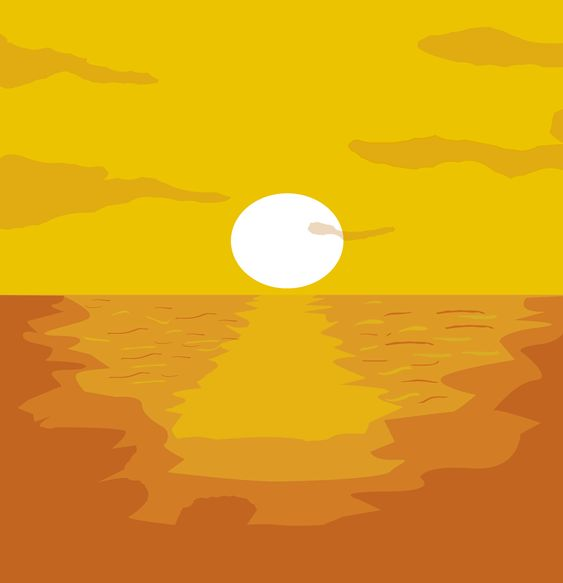
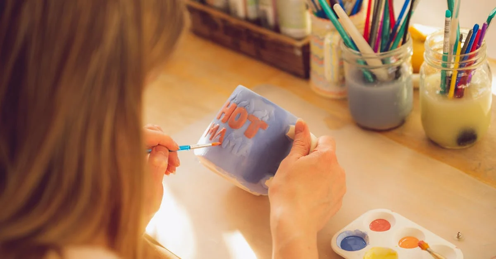

|  |  |
Amor Amarillo es un emprendimiento que nació para poder lograr lo que otras marcas y lugares no logran, rompiendo barreras y límites con nuevas ideas innovadoras de tazas cada día!
Somos dos chicas con ganas de crear arte; comenzamos hace unos años diseñando tazas dibujando a mano en modelos de porcelana, para luego ampliar nuestros horizontes, llevando nuestro arte a creaciones de todo tipo.
¿Por qué "Amor Amarillo"? La verdad es que nos hacen esta pregunta bastante seguido, y la respuesta es que somos fans de Gustavo Cerati. Cuando decidimos empezar con este proyecto, no sabíamos qué nombre ponerle; fue entonces cuando se nos ocurrió "Amor Amarillo", inspirado en el álbum y todas las maravillosas canciones de él, motivadas por el amor al arte y el romanticismo, cosas que desde un principio representan y destacan de nuestro emprendimiento y en nuestros diseños.
Los invitamos a seguir viendo, esperamos les gusten! ♥
«No sabíamos cómo manejar un negocio, pero teníamos sueños y talento» Ruth Handler